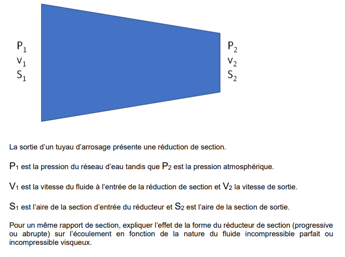

|
1) Hydrostatique : fluide parfait, pression dans un fluide
Théorie Fluide au repos : la pression dépend seulement de la profondeur. Même niveau \(\Rightarrow\) même pression (dans un même liquide connecté). La force de pression sur une paroi est perpendiculaire à la surface. À retenir concours : savoir passer de profondeur \(\rightarrow\) \(\Delta p\), puis \(\Delta p\rightarrow F\) si on donne une surface. Formules
\[
p(h)=p_0+\rho g h \qquad;\qquad \Delta p=\rho g h
\]
\[
F=p\,S
\]
Conversions utiles :
\[
1\,\mathrm{bar}=10^5\,\mathrm{Pa}\qquad;\qquad 1\,\mathrm{cm^2}=10^{-4}\,\mathrm{m^2}
\]
Exercice type Dans l’eau : \(\rho=1000\), \(g=10\). À \(h=3\,m\), calcule \(\Delta p\) puis en bar. Correction : \[ \Delta p=\rho g h=1000\times 10\times 3=3\times 10^4\,\mathrm{Pa} \] \[ \Delta p=\frac{3\times 10^4}{10^5}=0{,}30\,\mathrm{bar} \] |
|
2) Hydrostatique : poussée d’Archimède
Théorie Un objet plongé dans un fluide subit une force verticale vers le haut égale au poids du fluide déplacé. En pratique : convertir les litres en m\(^3\), puis appliquer la formule. Formule
\[
\Pi=\rho_{\text{fluide}}\,g\,V_{\text{déplacé}}
\]
Rappel conversion :
\[
1\,L=10^{-3}\,m^3
\]
Exercice type Un objet déplace \(4\,L\) d’eau. Avec \(g=10\), calcule \(\Pi\). Correction : \(V=4\times 10^{-3}\,m^3\). \[ \Pi=1000\times 10\times 4\times 10^{-3}=40\,N \] |
|
3) Tension superficielle & capillarité
Théorie À petite échelle, la surface “domine” : la tension superficielle \(\gamma\) explique gouttes, ménisques et capillarité. En exercice, on te donne \(\gamma\) et un rayon \(r\) : tu appliques directement la relation de montée/descente. Formules
Force de tension sur une longueur \(L\) :
\[
F=\gamma L
\]
Tube capillaire (rayon \(r\)) :
\[
h=\frac{2\gamma \cos\theta}{\rho g r}
\]
Exercice type Eau : \(\gamma=0{,}072\), \(\rho=1000\), \(g=10\), \(\theta\simeq 0^\circ\). Tube : \(r=0{,}5\,mm\). Estimer \(h\). Correction : \(r=5\times 10^{-4}\,m\), \(\cos\theta=1\). \[ h=\frac{2\times 0{,}072}{1000\times 10\times 5\times 10^{-4}} =\frac{0{,}144}{5}=0{,}0288\,m\approx 2{,}9\,cm \] |
|
4) Pression dans les gaz : compressibilité (isotherme)
Théorie Un gaz est compressible : si le volume diminue, la pression augmente. Au niveau concours, la relation utile “simple” est l’isotherme : \(pV=\text{cste}\). Formule
\[
p_1V_1=p_2V_2 \quad (\text{température constante})
\]
Exercice type Un gaz passe de \(p_1=2\,bar\), \(V_1=10\,L\) à \(V_2=4\,L\) (isotherme). Calcule \(p_2\). Correction : \[ p_2=\frac{p_1V_1}{V_2}=\frac{2\times 10}{4}=5\,bar \] |
|
5) Dynamique (fluide parfait) : débit, continuité, flux
Théorie Si le fluide est incompressible et l’écoulement permanent : le débit est le même partout. Donc si la section diminue, la vitesse augmente. C’est le réflexe “S×v constant”. Formules
\[
Q=\frac{\Delta V}{\Delta t}=S\,v
\]
\[
S_1v_1=S_2v_2
\]
Exercice type \(S_1=6\,cm^2\), \(S_2=2\,cm^2\), \(v_1=2\,m/s\). Calcule \(v_2\). Correction : \[ v_2=\frac{S_1}{S_2}v_1=\frac{6}{2}\times 2=6\,m/s \] |
|
6) Dynamique (fluide parfait) : Bernoulli / Venturi
Théorie Bernoulli relie pression et vitesse quand on néglige les pertes. En conduite horizontale : si \(v\) augmente, \(p\) diminue (effet Venturi). En exo, on combine souvent : continuité pour trouver \(v_2\), puis Bernoulli pour \(p_1-p_2\). Formules
Général :
\[
p+\frac12\rho v^2+\rho gz=\text{cste}
\]
Horizontal (\(z_1=z_2\)) :
\[
p_1-p_2=\frac12\rho\left(v_2^2-v_1^2\right)
\]
Exercice type Eau \(\rho=1000\). \(v_1=2\,m/s\), \(v_2=6\,m/s\). Calcule \(p_1-p_2\). Correction : \[ p_1-p_2=\frac12\times 1000\times (36-4)=500\times 32=1{,}6\times 10^4\,Pa \] |
|
7) Dynamique (fluide visqueux) : viscosité, pertes, turbulence
Théorie Si l’énoncé parle de viscosité/pertes : on sait juste que Bernoulli “sans pertes” n’est plus exact. On caractérise souvent le régime par Reynolds : grand \(\Rightarrow\) turbulence probable \(\Rightarrow\) pertes plus fortes. Formules
\[
\mathrm{Re}=\frac{\rho v D}{\mu}
\]
(idée pertes de charge) : \(\Delta p\) augmente si \(L\uparrow\), \(v\uparrow\), rugosité\uparrow, et si \(D\downarrow\).
Exercice type Eau : \(\rho=1000\), \(\mu=10^{-3}\). \(D=0{,}020\,m\), \(v=1{,}5\,m/s\). Calcule \(\mathrm{Re}\). Correction : \[ \mathrm{Re}=\frac{1000\times 1{,}5\times 0{,}020}{10^{-3}}=\frac{30}{10^{-3}}=3\times 10^4 \] |
|
8) Pompes : types, principe, conditions d’utilisation
Théorie Une pompe sert à fournir une élévation de pression \(\Delta p\) pour obtenir un débit \(Q\). Deux familles :
Formules
Puissance hydraulique :
\[
\mathcal{P}_h=\Delta p\,Q
\]
Puissance absorbée (rendement \(\eta\)) :
\[
\mathcal{P}_{abs}=\frac{\mathcal{P}_h}{\eta}
\]
Exercice type \(Q=0{,}020\,m^3/s\), \(\Delta p=3\times 10^5\,Pa\), \(\eta=0{,}70\). Calcule \(\mathcal{P}_h\) puis \(\mathcal{P}_{abs}\). Correction : \[ \mathcal{P}_h=3\times 10^5\times 0{,}020=6\times 10^3\,W=6\,kW \] \[ \mathcal{P}_{abs}=\frac{6000}{0{,}70}\approx 8{,}6\,kW \] |

P2,V2,S2)" style="max-width:100%; height:auto; border-radius:10px; border:1px solid rgba(255,255,255,0.15);"/>